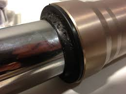

Ofrecemos una variedad de servicios para mantener y reparar tu motocicleta en las mejores condiciones. Confía en nuestro equipo de expertos para el cuidado de tu moto.

Mantenimiento Preventivo
Realizamos revisiones periódicas para asegurar que todos los componentes de la motocicleta funcionen correctamente. Esto incluye cambios de aceite, filtros, ajuste de cadena, revisión de frenos y neumáticos, entre otros.
Consultar

Reparación de Motores
Desde ajustes de válvulas hasta reconstrucciones completas de motor, nuestro taller está equipado con herramientas especializadas para trabajar en motores de cuatro tiempos de todas las CC, garantizando un rendimiento óptimo.
Consultar

Reparación de Suspensiones
Ofrecemos mantenimiento y ajuste de sistemas de suspensión para garantizar una conducción segura y cómoda.
Consultar

Reparación de Sistemas de Carga y Arranque
Problemas con la batería, el alternador o el motor de arranque pueden dejar tu moto inoperativa. Realizamos pruebas de carga, revisión de reguladores-rectificadores y reparación de cableados para garantizar que el sistema eléctrico funcione correctamente.
Consultar

Reparación de Sistemas de Iluminación y Señalización
Desde fallos en las luces delanteras hasta problemas con los intermitentes o la luz de freno, revisamos y reparamos todo el sistema de iluminación, asegurando que cumpla con las normativas de seguridad.
Consultar